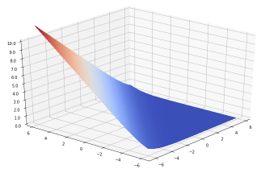
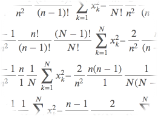

機械学習の記事
- Scalaでの行列演算の計算速度 (2020/02/28)
- ソフトマックス関数と交差エントロピー誤差の可視化 (2020/02/26)
- AWS Certified Machine Learning – Specialty 合格しました (2019/12/04)
- Kaggleのタイタニック号のチュートリアルを試す (2019/11/26)
- 混合ガウスモデルによるクラスタリングをJupyter Notebook上で試す (2019/11/21)
- SVMをJupyter Notebook上のscikit-learnで試す (2019/11/18)

異常検知の記事
- データの分布状況から異常検知 (2020/01/28)
データ可視化の記事
- データ可視化ツール(Metabase, Redash, Superset)の比較メモ (2020/05/11)
- 折れ線グラフをJupyter Notebook上でシンプルに表示する (2020/05/02)
- ヒストグラム・散布図をJupyter Notebook上で表示する (2019/11/14)
データ収集/保管フェーズの記事
- Talend Open Studioのインストールからジョブ作成まで (2020/05/08)
- PostgreSQLパーティショニングのTableau、DBeaver、Glue Crawlerでの対応状況調査 (2019/12/24)
- fluentdのoutputプラグインの作成 (2019/11/11)
- fluentdのプラグインをgemでインストール (2019/10/31)
- PostgreSQLのバルクインサートをRubyからPrepared Statementで実行 (2019/10/25)
統計の記事
- 不偏分散はなぜ n – 1 で割るのか？ (2014/02/27)
数値計算/シミュレーションの記事
- ウイルス感染の簡単なシミュレーション (2020/04/24)
- Scalaでの行列演算の計算速度 (2020/02/28)
- データの分布状況から異常検知 (2020/01/28)
- 一様分布、正規分布、指数分布、ポアソン分布の乱数を生成する方法 (Scala) (2020/01/09)
数式が多めの記事
- ソフトマックス関数と交差エントロピー誤差の可視化 (2020/02/26)
- 正規分布に従う乱数の生成方法(Box–Muller法)の数式による説明 (2020/01/23)
- 不偏分散はなぜ n – 1 で割るのか？ (2014/02/27)

Linuxコマンドの記事
- AWS CloudWatchログ容量の推移を確認するワンライナー [aws jq] (2020/05/07)
- 空のディレクトリを削除するには [find rm xargs] (2020/05/06)
- gitでよく使うコマンド (gitl, gitd, gits) [git] (2020/05/01)
- columnコマンドをUbuntuにインストール [column] (2020/03/10)
- PowerShellをLinuxにインストールして試す [pwsh] (2020/03/09)
- S3にあるテキストファイルをサクッと編集するには [vipe aws] (2020/02/27)
- gsutil、aws s3での基本的なファイル操作（Google Cloud Storage、S3） [aws gsutil] (2019/11/15)
- ディレクトリの合計容量を確認するには(local, Gogle Cloud Storage, S3) [du aws gsutil] (2019/10/29)
- Linuxのパイプの流れの進捗を見守るには [pv] (2019/10/21)
- Google Cloud StorageとAWS S3との間でファイルをコピーするには [aws gsutil] (2019/10/19)
プログラミング言語比較の記事
AWS/GCP関係の記事
- AWS CloudWatchログ容量の推移を確認するワンライナー (2020/05/07)
- S3にあるテキストファイルをサクッと編集するには (2020/02/27)
- PostgreSQLパーティショニングのTableau、DBeaver、Glue Crawlerでの対応状況調査 (2019/12/24)
- AWS SAMでの Lambda Functions with Node.js + API Gateway 最小構成 (2019/12/16)
- AWS Certified Machine Learning – Specialty 合格しました (2019/12/04)
- aws cliを自作しています (2019/11/29)
- AWS CloudFormationをちょっとだけ理解した (2019/11/19)
- gsutil、aws s3での基本的なファイル操作（Google Cloud Storage、S3） (2019/11/15)
- 言語の判定をGoogle Cloud TranslationとAmazon Comprehendとで比較してみる (2019/11/08)
- AWS Certified Big Data - Specialty 合格しました (2019/11/05)
- Google Cloud StorageとAWS S3との間でファイルをコピーするには (2019/10/19)
Jupyter Notebook/Pandas/matplotlib - ソフトウェア別記事
- 折れ線グラフをJupyter Notebook上でシンプルに表示する (2020/05/02)
- 混合ガウスモデルによるクラスタリングをJupyter Notebook上で試す (2019/11/21)
- SVMをJupyter Notebook上のscikit-learnで試す (2019/11/18)
- ヒストグラム・散布図をJupyter Notebook上で表示する (2019/11/14)
- PandasのDataFrameに対する基本操作をJupyter Notebook上で試す (2019/11/12)
- Jupyter NotebookをDockerを使って簡単にインストールし起動（nbextensions、Scalaにも対応） (2019/11/06)
Scala - 言語別記事
- Scalaでの行列演算の計算速度 (2020/02/28)
Scalaも登場する記事
- ウイルス感染の簡単なシミュレーション (2020/04/24)
- データの分布状況から異常検知 (2020/01/28)
- インクリメント・デクリメントの書き方のまとめ(Scala、Java、Rust、C言語、C++、Go言語、PHP、Perl、Python、Ruby、JavaScript) (2020/01/14)
- 一様分布、正規分布、指数分布、ポアソン分布の乱数を生成する方法 (Scala) (2020/01/09)
- if文の書き方のまとめ(Scala、Java、Rust、C言語、C++、Go言語、PHP、Perl、Python、Ruby) (2019/11/22)
- 混合ガウスモデルによるクラスタリングをJupyter Notebook上で試す (2019/11/21)
- Jupyter NotebookをDockerを使って簡単にインストールし起動（nbextensions、Scalaにも対応） (2019/11/06)
Java - 言語別記事
もっとも古くから触っていた言語の1つですが記事はあまりありません。
Javaも登場する記事
PHP - 言語別記事
もっとも古くから触っていた言語の1つですが記事はあまりありません。
PHPも登場する記事
Perl - 言語別記事
- Perlで warning: Setting locale failed. と警告された時の対処 (2020/01/13)
Perlも登場する記事
Python - 言語別記事
- Pythonでのタイムゾーンの扱い(datetime,p pytz) (2020/01/06)
Pythonも登場する記事
- 折れ線グラフをJupyter Notebook上でシンプルに表示する (2020/05/02)
- ソフトマックス関数と交差エントロピー誤差の可視化 (2020/02/26)
- インクリメント・デクリメントの書き方のまとめ(Scala、Java、Rust、C言語、C++、Go言語、PHP、Perl、Python、Ruby、JavaScript) (2020/01/14)
- aws cliを自作しています (2019/11/29)
- Kaggleのタイタニック号のチュートリアルを試す (2019/11/26)
- if文の書き方のまとめ(Scala、Java、Rust、C言語、C++、Go言語、PHP、Perl、Python、Ruby) (2019/11/22)
- 混合ガウスモデルによるクラスタリングをJupyter Notebook上で試す (2019/11/21)
- SVMをJupyter Notebook上のscikit-learnで試す (2019/11/18)
- ヒストグラム・散布図をJupyter Notebook上で表示する (2019/11/14)
- PandasのDataFrameに対する基本操作をJupyter Notebook上で試す (2019/11/12)
- Jupyter NotebookをDockerを使って簡単にインストールし起動（nbextensions、Scalaにも対応） (2019/11/06)
- Raspberry PiでADコンバータ(MCP3208)を使う (2014/07/23)
Ruby - 言語別記事
- privateなgemサーバの構築とgem作成から利用まで (2019/11/01)
Rubyも登場する記事
- インクリメント・デクリメントの書き方のまとめ(Scala、Java、Rust、C言語、C++、Go言語、PHP、Perl、Python、Ruby、JavaScript) (2020/01/14)
- if文の書き方のまとめ(Scala、Java、Rust、C言語、C++、Go言語、PHP、Perl、Python、Ruby) (2019/11/22)
- fluentdのoutputプラグインの作成 (2019/11/11)
- PostgreSQLのバルクインサートをRubyからPrepared Statementで実行 (2019/10/25)
Raspberry Piの記事
- Raspberry PiでADコンバータ(MCP3208)を使う (2014/07/23)
- Raspberry Piを走らせる (2014/07/04)
取得した資格
- AWS Certified Machine Learning - Specialty (2019/11/20)
- 記事: AWS Certified Machine Learning – Specialty 合格しました (2019/12/04)
- AWS Certified Big Data - Specialty (2019/10/31)
- 記事: AWS Certified Big Data - Specialty 合格しました (2019/11/05)
- AWS Certified Solutions Architect - Associate (2019/09/26)
- 全国珠算教育連盟 珠算検定 初段 (昔)
- 日本商工会議所 珠算検定 1級 (昔)

これまでに携わった主な公開事例
- ECサイトの検索エンジン (2013/05 〜 2019/07)
多数のECサイトの検索エンジン開発/導入/運用に携わる